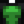

Wild Bait
| Wild Bait | |
| A unique recipe from Linus that gives you a chance to catch two fish at once. | |
| Information | |
| Source | Crafting |
| Energy | Inedible |
| Sell Price | |
| Crafting | |
| Recipe Source |
|
| Ingredients | |
| Produces | 5 Wild Bait per craft |
Wild Bait is a type of bait that makes it possible to catch two fish at the same time. The chance of two fish being caught at once is equal to 0.25 + Daily Luck / 2.0. It also reduces the delay before a nibble on a fishing rod by 62.5%, making fish bite slightly faster than with standard bait.[1]
Wild Bait can be crafted after being taught the recipe by Linus during his 4-heart cutscene. Once the recipe is known it is also possible to obtain Wild Bait from Fishing Treasure Chests. It can also be found in artifact spots on Ginger Island, even before triggering the cutscene with Linus.
Note that catching two fish does not grant double fishing experience points. However, catching two fish while working on a fishing or special order quest counts both fish toward the required total.
Wild Bait cannot be used with the Training Rod or the Bamboo Pole. Only the Fiberglass Rod, the Iridium Rod, and the Advanced Iridium Rod can use bait.
Wild bait can be used in a Crab Pot, where it decreases the chance of trash (if the player does not have the Mariner profession) compared to using standard bait and gives crab pots a 25% chance to produce 2 items. Daily luck does not impact this chance.[2]
Use
Requires:  Fiberglass Rod,
Fiberglass Rod,  Iridium Rod, or
Iridium Rod, or  Advanced Iridium Rod.
Advanced Iridium Rod.
Each cast uses one piece of bait or one magnet. When all bait is used up, the game pops up a notification saying "You've used your last piece of bait."
To attach bait to a fishing rod, open the inventory, click on the bait ( left-click or
left-click or  right-click, depending on how many bait will be used), and then
right-click, depending on how many bait will be used), and then  on the rod. To remove bait,
on the rod. To remove bait,  on the rod.
on the rod.
On an Xbox controller, press  on the bait to select the whole stack (or
on the bait to select the whole stack (or  to pick up a single one), then
to pick up a single one), then  to attach to the rod.
to attach to the rod.
On a PS4 controller, press  on the bait to select the whole stack (or
on the bait to select the whole stack (or  to pick up a single one), then
to pick up a single one), then  to attach to the rod.
to attach to the rod.
On a Nintendo Switch Controller, Press  on the bait to select the whole stack (Or
on the bait to select the whole stack (Or  to pick up a single one), then
to pick up a single one), then  to attach to the rod.
to attach to the rod.
Bait can be detached by pressing  on either Controller. (
on either Controller. ( on Nintendo Switch)
on Nintendo Switch)
For the mobile version, bait can be added to the fishing rod by opening the inventory, then dragging the bait and dropping it on top of the rod.
Gifting
| Villager Reactions
| |
|---|---|
| Neutral | |
| Hate | |
Bundles
Wild Bait is not used in any bundles.
Recipes
Wild Bait is not used in any recipes.
Tailoring
Wild Bait is used in the spool of the Sewing Machine to create a Shirt. 
Quests
One or five Wild Bait may be requested by several fish in Fish Pond quests.
Trivia
- The chance of catching 2 fish does not apply to Legendary Fish. It can however, catch 2 of the semi-Legendary fish caught from the Extended Family quest line.
References
History
- 1.4: Wild Bait now has a chance to catch two fish at once. Can now be obtained from fishing treasure chests once knowing the recipe. Can now be used in Tailoring. Can be requested in Fish Pond quests.
- 1.5: Can now be found in artifact spots on Ginger Island.
- 1.6: Now a neutral gift for Linus. Can be used in the Advanced Iridium Rod. When used in Crab Pots, now players a 25% chance to yield two items and decreases the chance of trash.